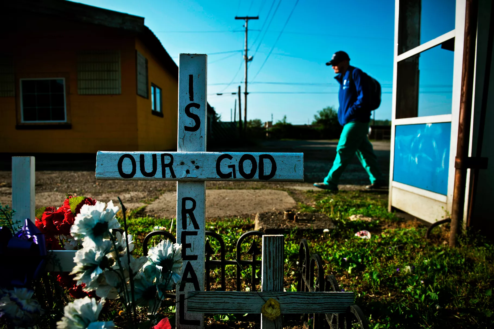
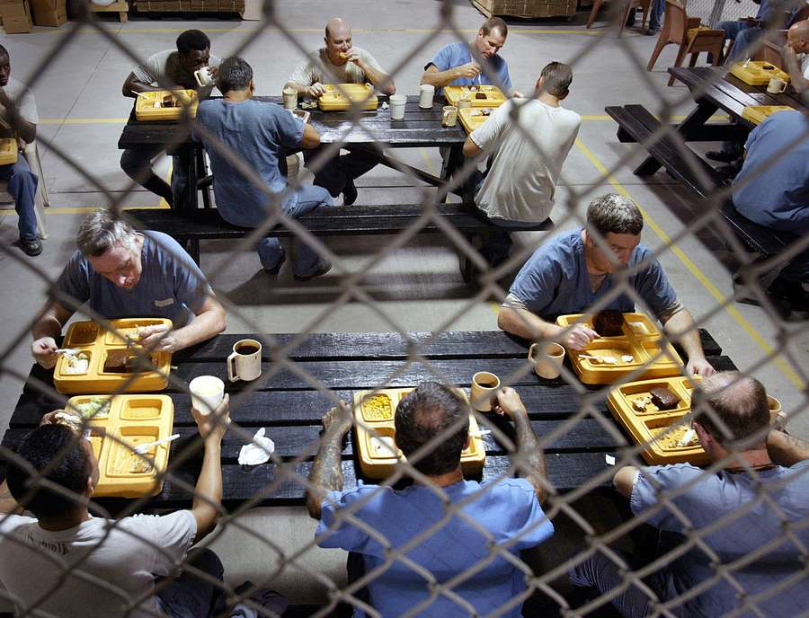

Halfway Houses
These overlooked facilities often make the difference between death and life for those struggling with addiction.
Reporting and Video: Nora Eckert
 A System in Reform
A System in Reform
"I would have gone back to using," said Cathy Bradley, describing what she thinks would have happened if she hadn't been accepted at the Nashville halfway house where she spent 25 months.
Bradley's story is unique, but her sentiment is not: time and time again, former halfway house residents said that without their time in a transitional living home, they would have relapsed, committed a crime or died of an overdose.
However, because of gaps in regulation, lack of funding, and poor leadership, halfway houses can drive residents to the same fate when not run properly.
The problems with the halfway house system in the U.S. are certainly not new, but they have increased in the past two years. Due to former Attorney General Jeff Sessions’ resistance to the First Step Act, halfway houses are being used at a decreasing rate, the exact opposite goal of said Act.
The First Step Act is a prison reform initiative backed by President Donald Trump aimed at reducing recidivism through increasing halfway house use and other alternatives to incarceration. Sessions argued that for financial reasons, halfway houses should not be used. Instead of increasing their role in the criminal justice system, he aimed to decrease direction to halfway houses.
Attorney Jeff Sessions. Photo: Doug Mills/New York Times
Sessions’ financial argument is not supported by a 2016 report by the Administrative Office of the U.S. Courts, which states that the federal government spends about $36,000/year to house an inmate, a dramatically higher cost than the $4,000 required to house an individual in a halfway house.
Does crime severity predict likelihood of recidivism after halfway house residency?
Source: Data collected from study of Ohio halfway houses, used by Maryland officials in advocating for legislative changes. Y axis indicates percent likelihood to recidivate. A History of Shame and Secrecy
Unlike other mental illnesses, addiction has been treated with a sense of shame and secrecy that implies it is the user’s fault and doing. As such, individuals with addictions have been forced to form communities in order to survive.
Perhaps the most recognizable addiction organization is Alcoholics Anonymous, which was started by Bill Wilson in 1935 after he realized how expensive and difficult addiction recovery was. AA, as it is most commonly known, has helped close to 2 million members as of 2016. However, its success rates are highly debated and difficult to measure. A study conducted by AA in 2014 indicated that 22 percent of program participants were sober for 20 or more years.
Although the program has helped many, it is emblematic of what many participants say is the shame surrounding addiction and addiction treatment in today's society.
A memorial for 28 people who overdosed on heroin laced with fentanyl in 2016. The deaths occurred within six hours of each other. Photo: Brendan Smialowski/AFP/Getty Images.
“We have been such a self-dependent group of people for so many decades. It is in the name of the largest 12 step program: anonymous," said Sullivan.
In an article in the New York Times, David Colman also finds issue with the way the organization operates.
“More and more, anonymity is seeming like an anachronistic vestige of the Great Depression, when AA got its start and when alcoholism was seen as not just a weakness but a disgrace,” Colman said.
Of course, alcoholism is just one of many addictions people suffer from. The most dangerous and prominent addiction in recent years has been opioid use, especially with the surgence of fentanyl, a synthetic opioid that has caused a spike in overdoses. According to the Center for Disease Control, synthetic opioid overdose deaths have skyrocketed in the past five yeras. Today, they account for nearly 30,000 deaths a year. In 2013, they accounted for less than 5,000 overdose deaths.

Jo Black Sullivan"The company you surround yourself within recovery, they understand that. They understand the shame. They know the shame that you feel. No one judges you. They embrace your shame and help love you through it."
Program and Fundraising Specialist
Nick's Place
Regulation: The Key or the Problem?
Even when halfway houses are treated as an integral part of the criminal justice system, poor conditions can limit residents’ progress, evening causing some to feel unsafe. A New York Times report on New Jersey halfway houses found that after encountering violence or sexual abuse, inmates often asked to be brought back to prison, because they felt it was a less dangerous environment.
The Tampa Bay Times reported that several Florida halfway houses were being run by criminals, some as a cover to pay for drugs or abuse residents. This report cited a lack of regulation as the cause of this problem.
2003: inmates in Southern Florida take a lunch break from work. Photo: Carl Juste/Miami Herald.
Halfway houses should be the last place people have to worry about being mistreated, said Jo Black Sullivan, The Program and Fundraising Specialist for Nick’s Place, a halfway house in Beltsville, Maryland.
“For people battling this addiction, the last thing they need is one more shitty stumbling block in their way,” said Sullivan emphatically.
The situation in Florida calls into question the larger issue of what governmental bodies are tasked with regulating halfway houses and how do they do so.
Halfway houses are regulated by The Americans with Disabilities Act and 1968 Federal Fair Housing Act. According to the Federal Act, “it is illegal under the Act for local land use and zoning laws to exclude or limit group homes for individuals with specific types of disabilities.” Substance abuse is classified as such a disability.
Additionally, the Act does not exclude based on “fear, speculation, or stereotype about a particular disability or persons with disabilities in general.” Therefore, a group of offenders cannot be discriminated against for a history of medical illness or abuse. However, exclusion based on criminal record is allowed under the act.
Do Halfway Houses Enhance Parole Results?
Offenders who completed a halfway house program and then went to parole.
Source: A study of the impact halfway houses have on recidivism rates
Offenders who completed parole after stay in an incarceration facility, not a halfway house.
Source: A study of the impact halfway houses have on recidivism rates
As is evident in the cases of mismanagement of halfway houses in Florida, regulation of halfway houses is difficult and often dysfunctional on a state level.
However, some individuals who are involved with halfway houses say that lack of regulation is a strength, because they have more freedom to fit residents’ needs.
In Maryland, alone, there are dozens of halfway houses to choose from. How can a family or individual make a decision about what the best facility is for their needs if there is not consistent regulation?
Locations of Local Halfway Houses in
Maryland, D.C. and Virginia
A Personal Journey
A personalized approach to recovery is essential for the success of many former addicts, said Sullivan.
Although regulation is important to ensure residents are not mistreated, it can inhibit a halfway house team's ability to help those in their program.
“Places that run well, like Nick’s Place, might fall to the wayside. We run on a shoestring budget. But the guys we help here, we help. We roll up our sleeves and we get in with them, six young men at a time, and we are in there. If we were heavily structured with tons of oversight, you lose that.”
Andrew Malone certainly benefitted fom the way Nick's Place was run when he spent 13 months there after being in a recovery center. “It was obvious that everyone here cared about me,” said Malone. “People tried to help me work through things on a daily basis.” Now, Malone is the head of Nick's Place, and his job is to help others through the difficult times that he once went through.
This kind of "sleeves rolled up" effort is often what it takes to pull individuals out of the grips of addiction, especially when the outside world can condemn the addict due to the misconceptions about drug and alcohol abuse.
“The disease itself does not always lend to a lot of empathy from the outside world. But trust me, when you’re suffering from it, you’re suffering from a disease. The company you surround yourself with in recovery, they understand that. They understand the shame. They know the shame that you feel. No one judges you. They embrace your shame and help love you through it,” said Sullivan.
Cathy Bradley, Sullivan’s mentor, went through the halfway house system herself in Texas when she was in recovery. She said the sense of community she had in that process was essential for her development.
“To know that I’m not alone and to hear others’ vulnerability makes me feel not alone. For me, I was in a miserable dark and lonely place for so many years. When I heard other people tell my story, I was like, ‘You get it.’”